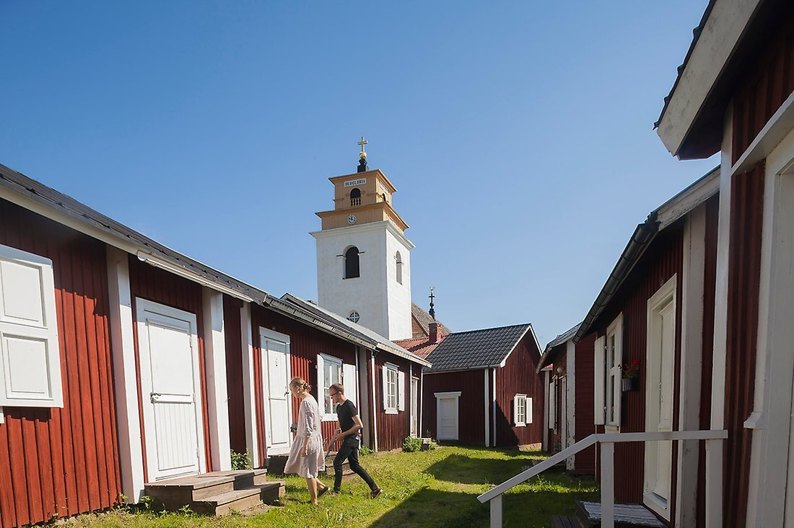

Världsarvet Gammelstads kyrkstad och Hägnan
Gammelstads kyrkstad är världens största kyrkstad med mer än 400 kyrkstugor. I utkanten ligger även friluftsmuseet Hägnan med sina evenemang och idylliska område. Gammelstads kyrkstad, friluftsmuseet Hägnan och Visitor Centre Sedan 1996 finns Gammelstads kyrkstad på Unscos lista över världsarv omistliga för mänskligheten. Gammelstads kyrkstad är världens största och bäst bevarade kyrkstad. Här möts du av en vacker, senmedeltida stenkyrka omgiven av hundratals små röda kyrkstugor. Alldeles intill hittar du friluftsmuseet Hägnan, som med sina gamla träbyggnader vittnar om livet förr - och massor av evenemang året runt!
